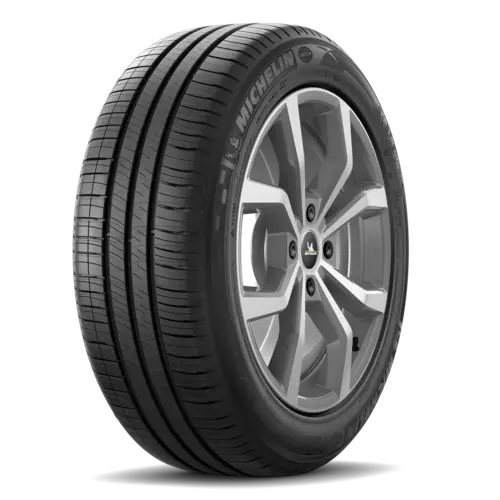

Michelin Michelin Energy XM2+ 195/55R15

RM 275.00
The Michelin Energy XM2+ is a premium passenger car tyre engineered for long mileage, reliable wet braking and enhanced durability. Its advanced full-silica rubber compound provides consistent grip throughout the tyre’s lifespan while reducing tread wear. Designed for fuel-efficient and comfortable everyday driving, it delivers dependable performance for city and highway use. Key Features: • Excellent tread life and durability • Reliable wet and dry grip • Enhanced wet braking performance, even when worn • Improved resistance to road damage • Advanced full-silica rubber compound • Low rolling resistance • Up to 25% longer mileage compared to tested premium competitors Specifications: • Size: 195/55R15 • Load & Speed Rating: 85V • Maximum Load: 515 kg • Maximum Speed: 240 km/h • Tyre Category: Economy Touring • Treadwear: 420 • Traction: A • Temperature: A • Brand Origin: France
Klang Hock Li Tyre Services Sdn Bhd, Klang, Selangor, Malaysia.
View live product details and enquire